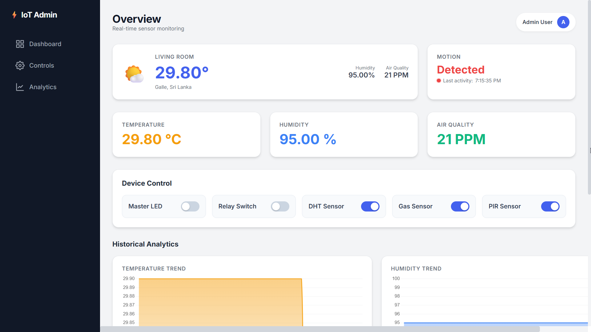
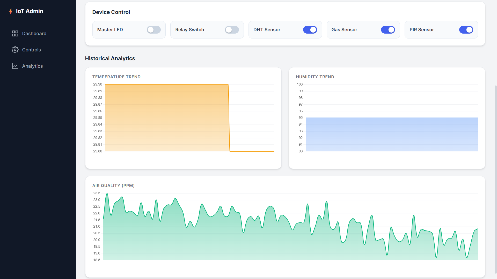

Building an ESP32 IoT Smart Home Dashboard
This project creates a complete data loop between your physical room and a web interface. It involves sensing environmental data using an ESP32 microcontroller, processing it via a Python Flask backend, and visualizing it on a custom-built dashboard.
Figure 1: Desktop View - Live Sensor Widgets
Figure 2: Desktop View - Historical Data Charts

Figure 3: Mobile Responsive View
How It Works
The system operates in three main stages:
- Sensing & Processing: The ESP32 continuously reads data from DHT11 (Temp/Humidity) and MQ-2 (Gas/Smoke) sensors. It calculates PPM values for gas and monitors motion via a PIR sensor, publishing everything to a public MQTT broker (HiveMQ).
- Data Management & Server: A Python Flask server subscribes to the MQTT broker. When data arrives, it logs it into a SQLite database (
sensor_data.db) to maintain a history of readings. - Visualization & Control: The web dashboard visualizes live data and trends. Toggling a switch on the UI sends a request to the Python server, which publishes a command back to the ESP32 to trigger physical hardware (LEDs or Relays).
Project Features
- Live Sensor Monitoring: Real-time data for Temperature, Humidity, Air Quality (in PPM), and Motion.
- Historical Analytics: Sensor data is logged to a database and visualized with interactive charts.
- Advanced Two-Way Control: Toggle physical devices (LED and 5V Relay) directly from the dashboard.
- Remote Sensor Management: Individually enable or disable specific sensors (DHT, Gas, PIR) to save power.
- Robust Architecture: Uses MQTT for fast, lightweight communication.
- Modern Responsive UI: A professional "Glassmorphism" design built with Tailwind CSS.
- Public Access: Accessible from anywhere in the world using a secure
ngroktunnel.
Project Architecture
The data flows through the system in two main ways:
- Sensor Data (ESP32 to Dashboard): ESP32 (Sensors) → MQTT Broker → Python Backend (Flask) → SQLite Database & Web Frontend
- Control (Dashboard to ESP32): Web Frontend → Python Backend → MQTT Broker → ESP32 (Toggles LED, Relay & Logic)
Hardware Requirements
- ESP32 Development Board
- DHT11 (Temperature & Humidity Sensor)
- MQ-2 (Smoke/Gas Sensor)
- HC-SR501 (PIR Motion Sensor)
- 5V Relay Module (JQC3F-05VDC-C)
- 1x LED & 330 Ohm Resistor
- Breadboard and Jumper Wires
Figure 4: Physical Hardware Setup on Breadboard
Software & Libraries
1. ESP32 (Arduino IDE)
You will need to install the following libraries via the Arduino Library Manager:
- PubSubClient (by Nick O'Leary)
- DHT sensor library (by Adafruit)
- Adafruit Unified Sensor (by Adafruit)
2. Python Backend (Your PC)
You will need Python 3 and the following libraries:
pip install Flask paho-mqttProject Files
Download the source code to get started:
- Download ESP32 Firmware (.ino)
- Download Python Backend (.py)
- Download HTML Dashboard Template (.html)
Step-by-Step Project Flow
Part 1: Hardware Setup
Wire your components to the ESP32. The pins below match the provided code:
- DHT11 (DATA): → GPIO 4
- MQ-2 Sensor (A0): → GPIO 34
- PIR Sensor (OUT): → GPIO 23
- LED (Positive Leg): → 330 Ohm Resistor → GPIO 25
- Relay Module (IN): → GPIO 26
- Power: Connect Relay VCC to VIN (5V). Connect all GND pins to ESP32 GND.
Part 2: Device (ESP32) Configuration
- Open your ESP32 sketch (`.ino` file) in the Arduino IDE.
- Install the libraries listed above.
- Update the Wi-Fi credentials at the top of the file:
const char* ssid = "YOUR_WIFI_SSID";
const char* password = "YOUR_WIFI_PASSWORD";- Upload the code to your ESP32.
- Open the Serial Monitor (115200 baud). Wait for the "Clean Air Calibration" to finish.
Part 3: Backend (Python) Setup
- Create a project folder (e.g., `iot-dashboard`).
- Inside it, place your Python script: `app.py`.
- Create a folder named `templates`.
- Place the `index.html` file **inside** the `templates` folder.
- Open a terminal in your project folder and install dependencies:
pip install Flask paho-mqtt
Part 4: Running the System Locally
- Ensure your ESP32 is powered on.
- Run the Flask app:
python app.py- The server will start, connect to MQTT, and generate the `sensor_data.db` file.
- Open your browser to: http://127.0.0.1:5000.
Part 5: Public Access with ngrok
To access your dashboard from your phone or outside your home:
- Download `ngrok` and authenticate it.
- With `app.py` running, open a new terminal and run:
ngrok http 5000- Use the generated `https://...ngrok.io` URL on any device.
Future Improvements
- Permanent Cloud Deployment: Deploy the `app.py` to a VPS or cloud platform for 24/7 uptime without a PC.
- Private Broker: Switch from the public HiveMQ broker to a private Mosquitto instance for enhanced security.
- PCB Design: Move from a breadboard to a custom printed circuit board for a cleaner hardware look.
Challenges & Lessons Learned
Building this IoT system revealed several interesting technical hurdles:
- Voltage Logic Levels: The ESP32 operates on 3.3V logic, but the Relay module and MQ-2 sensor prefer 5V. I had to ensure the Relay VCC was connected to the **VIN** pin (5V) of the ESP32 to trigger reliable switching.
- MQTT Latency: Using a public broker like HiveMQ is great for free testing, but sometimes introduces latency. For a snappier response time when toggling the LED, I optimized the Python loop to publish commands immediately without waiting for the next sensor read cycle.
- Sensor Calibration: The MQ-2 gas sensor requires a "burn-in" period. Initially, the readings were fluctuating wildly. Adding a calibration delay in the `setup()` function of the ESP32 code stabilized the baseline air quality readings.